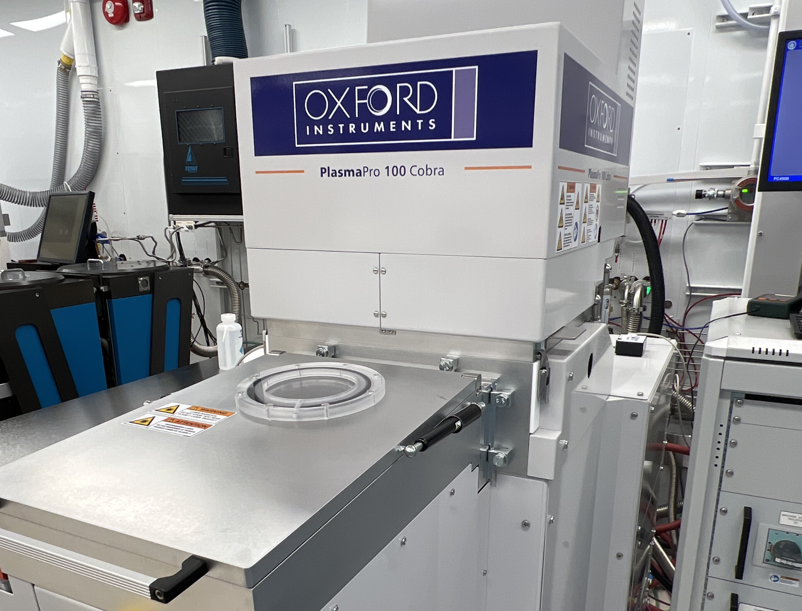
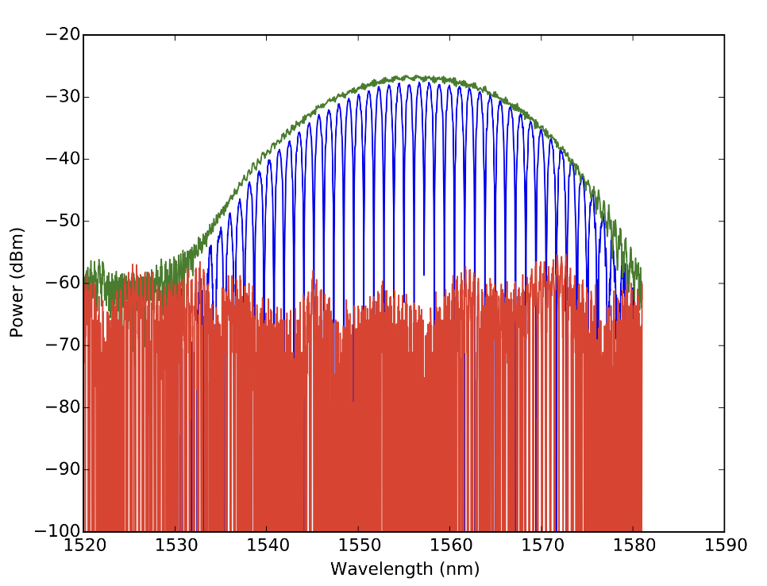
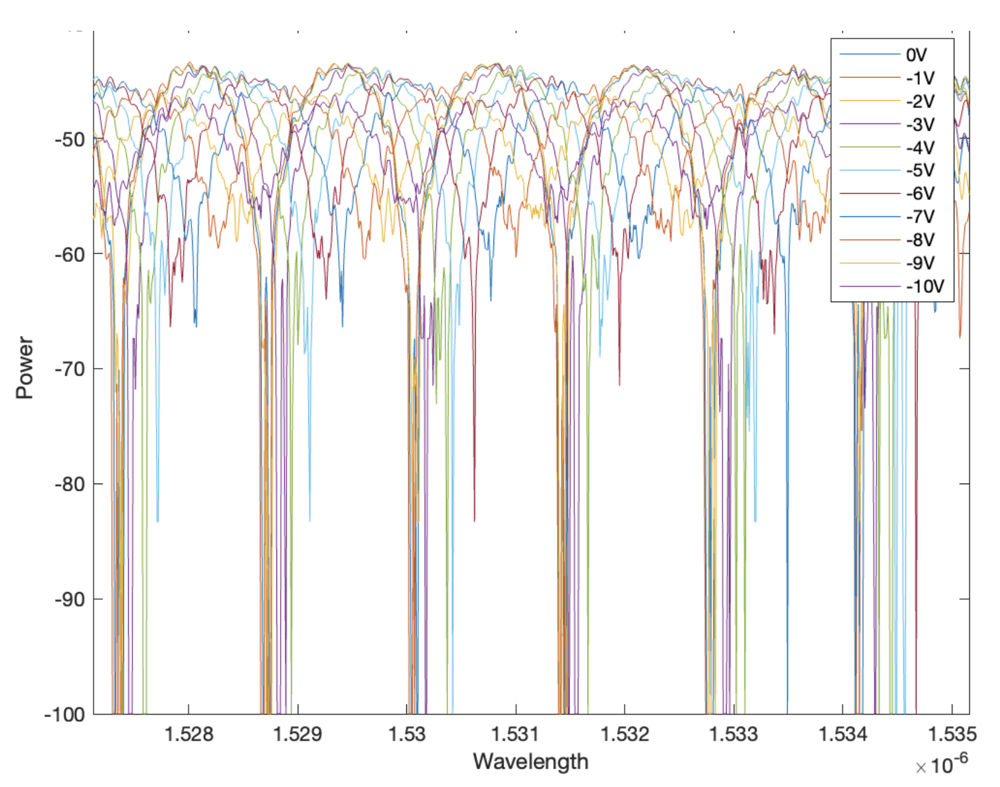

In 2023, I enrolled in Professor Lukas Chrostowski's Introduction to Silicon Photonics course at UBC. Although not directly relevant to the field of biomedicine, I found myself captivated by the prospect of designing my own Photonic chip. As traditional CMOS chips approach their physical and technological limitations in terms of both miniaturization and power efficiency, I recognized the importance of staying ahead of the curve in the realm of computing. This motivated me to explore the promising future of photonics and its potential impact on advancing technology.
Part 1: Designing the MZIs
My aim when designing my chip was to reduce the voltage required to induce a $\pi$ phase shift in the output ($V_\pi$), a figure commonly used to measure the efficiency of MZI modulators. I modeled 6 Mach-Zehnder Interferometers (MZIs) in KLayout, and tested their simulated efficiency in Lumerical Mode.
The 6 MZIs I designed varied in two main ways; the distance between the voltage rails, and the waveguides (d), and the length of waveguide traveling through the rails (L). These are the two main variables that can affect $V_\pi$ as $V_\pi \propto d/L$. These variations were selected to identify the relationship between the efficiency of MZIs and their dependence on different $d:L$ ratios. This analysis aims to determine the most effective $d:L$ ratio for maximizing efficiency within a confined surface area given standard lithography manufacturing restraints, and high cost of floorspace on photonic integrate circuits (PICs).
Part 2: Manufacturing the PICs

The PICs were manufactured in UBC's Brimacombe facility on 220nm wafer by a group of students including myself with supervision from our TA. The chips were first cleaved by hand, then patterned using Electron Beam Lithography. The chips were then plasma etched and underwent a second round of photolithography followed by two rounds of metal evaporation deposition. Finally the chips were coated with NLM's HLD electro-optical polymer.
Part 3: Testing the MZIs
The chips were tested using a laser photonic stage and fibre array system. The system was calibrated and leveled by hand using the fine rotation and translation gears on the chip stage. All MZIs on the chip had grating couplers set at $127 \mu m$ apart to allow for automated sweep testing of the chips after the stage was calibrated.

The first round of passive testing for my designs came out very promising. MZI-3 in particular was performing outstandingly. As seen above the measure arm in blue outputs power at approximately the same level as the reference arm in green. This was very promising as it validated that the design was both highly effective and efficient.
The high efficiency of MZI-3 validated the core hypothesis of the paper as MZIs 2 and 3 were expected to be most effective as they had the lowest value of $d$ and the second highest value of $L$. This showed that simply maximizing $L$ and minimizing $d$ was not the most ideal way of designing EO-MZI modulators but instead supported the hypothesis that there is an optimum ratio past which the efficiency gained from one of the two variables comes at the expense of efficiency gained from the other.
Part 4: Results and Takeaways

Unfortunately my design was rendered inoperable during the EO-polymer application. However, a colleague's design had very similar parameters and performed very well in active modulation testing. The device obtained a final $V_\pi$ value of 6.569 V at low voltages.
Although I could not compare the simulated results of my designs with experimental data due to the damage on my PIC, during my time learning about photonics I had the pleasure of learning from the best in the photonics field. I would like to once again thank professor Lukas Chrostowski for his support during the entirety of the project and for the entire Brimacombe Facilities team.
For more information on my project please take a look at my project paper below.